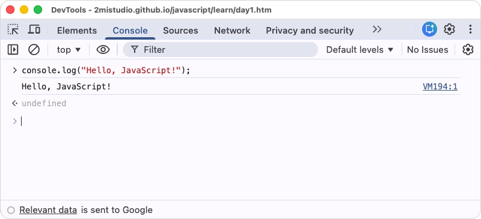

完成本日學習後，你應該能夠：
JavaScript 是一種高階、直譯式的程式語言，主要用於為網頁添加互動功能。它與 HTML 和 CSS 共同構成了現代網頁開發的三大核心技術。若將網頁比喻為一棟建築物，HTML 負責建築的結構（骨架），CSS 負責外觀裝飾（美化），而 JavaScript 則賦予建築物各種功能（如電梯、自動門、照明系統等）。
JavaScript 最初由 Netscape 公司的 Brendan Eich 於 1995 年開發，原本設計目的是為網頁增加簡單的互動效果。然而，經過數十年的發展，JavaScript 已經成為一種功能強大且應用廣泛的程式語言，不僅能在瀏覽器中執行（前端開發），也能透過 Node.js 在伺服器端執行（後端開發），甚至可以開發行動應用程式、桌面應用程式等。
在現代網頁開發中，JavaScript 幾乎是不可或缺的技術。任何需要使用者互動的網頁功能，例如表單驗證、動態內容更新、動畫效果、資料擷取等，都需要依賴 JavaScript 來實現。此外，JavaScript 生態系統龐大，擁有豐富的函式庫與框架（如 React、Vue、Angular），使開發者能夠更有效率地建構複雜的應用程式。
更重要的是，JavaScript 的學習門檻相對較低，不需要安裝複雜的開發環境，只要有瀏覽器就能開始學習與實作。這使得 JavaScript 成為程式設計初學者的理想入門語言之一。
JavaScript 程式碼主要在兩種環境中執行：瀏覽器與 Node.js。對於初學者而言，瀏覽器是最容易上手的執行環境。所有現代瀏覽器（如 Chrome、Firefox、Safari、Edge）都內建 JavaScript 引擎，能夠直接執行 JavaScript 程式碼。
瀏覽器提供了一個稱為「Console」的開發者工具，這是一個互動式的 JavaScript 執行環境，讓開發者可以即時輸入程式碼並查看結果。這個工具不僅適合學習與測試程式碼片段，也是除錯（debugging）時的重要輔助工具。
在大多數瀏覽器中，可以透過以下方式開啟 Console：
開啟後，你會看到一個類似命令列的介面，這就是 JavaScript 的執行環境。

console.log("Hello, JavaScript!");
**執行結果：**
Hello, JavaScript!
說明： console.log() 是 JavaScript 中最常用的指令之一，用於在 Console 中輸出訊息。括號內的內容會被顯示在 Console 中。這個指令主要用於除錯與檢視變數值。
console.log(10 + 5);
console.log(20 - 8);
console.log(6 * 7);
console.log(100 / 4);
**執行結果：**
15
12
42
25
說明： JavaScript 可以直接進行數學運算。運算結果會立即顯示在 Console 中。這展示了 JavaScript 作為程式語言的基本運算能力。
在網頁中使用 JavaScript 有三種主要方式，就像 CSS 也有三種引入方式（inline、internal、external）：
顧名思義，行內的意思就是將 JavaScript 直接寫在 HTML 標籤當中。請參考以下範例：
<!DOCTYPE html>
<html lang="zh-TW">
<head>
<meta charset="UTF-8">
<title>Internal JavaScript 範例</title>
</head>
<body>
<h1>Inline JavaScript 範例測試</h1>
<!--（方法一）直接在 HTML 標籤的事件屬性中寫 JavaScript，結果觸發彈跳視窗 -->
<button onclick="alert('按鈕被點擊了！')">點我</button>
<!--（方法二）直接在 HTML 標籤的事件屬性中寫 JavaScript，結果出現在 Console -->
<button onclick="console.log('Hello from button')">點我</button>
<!--（方法三）也可以呼叫函式 -->
<button onclick="showMessage()">點我</button>
<script>
function showMessage() {
alert('這是從函式呼叫的訊息');
}
</script>
</body>
</html>
執行結果： 點擊任一按鈕都會有對應的互動反應。
說明：
Inline JavaScript 的缺點：
建立一個 HTML 檔案（例如 index.html），內容如下：
<!DOCTYPE html>
<html lang="zh-TW">
<head>
<meta charset="UTF-8">
<title>Internal JavaScript 範例</title>
</head>
<body>
<h1>Internal JavaScript 範例測試</h1>
<script>
console.log("這段訊息來自 HTML 中的 JavaScript");
alert("歡迎來到 JavaScript 的世界！");
</script>
</body>
</html>
執行結果： 開啟此 HTML 檔案時，會出現一個彈出視窗顯示「歡迎來到 JavaScript 的世界！」，並且在 Console 中會看到「這段訊息來自 HTML 中的 JavaScript」。
說明： 標籤用於在 HTML 中嵌入 JavaScript 程式碼。alert() 函式會彈出一個警告視窗。這是在網頁中執行 JavaScript 的基本方式。比起 inline 是更好的做法，程式碼集中管理。
建立一個 JavaScript 檔案（例如 script.js）：
console.log("這段程式碼來自外部 JS 檔案");
在 HTML 中引用：
<!DOCTYPE html>
<html lang="zh-TW">
<head>
<meta charset="UTF-8">
<title>外部 JavaScript</title>
</head>
<body>
<h1>使用外部 JavaScript 檔案</h1>
<script src="script.js"></script>
</body>
</html>
說明： 將 JavaScript 程式碼寫在獨立的 .js 檔案中，並透過 <script src="..."> 引用，這是實務上更常見的做法。這樣可以讓程式碼更易於管理與維護，特別是當專案規模變大時。
// 這是單行註解，不會被執行
/*
這是多行註解
可以寫很多行
都不會被執行
*/
console.log("只有這行會被執行");
**執行結果：**
只有這行會被執行
說明： 註解用於在程式碼中添加說明文字，不會被執行。單行註解使用 //，多行註解使用 /* ... */。良好的註解習慣有助於理解程式碼邏輯。
錯誤範例：
consol.log("Hello"); // console 少了一個 e
**錯誤訊息：**
Uncaught ReferenceError: consol is not defined
原因： JavaScript 對大小寫與拼字非常敏感。console 拼成 consol 會導致程式無法找到對應的指令。
正確寫法：
console.log("Hello");
除錯技巧： 仔細檢查錯誤訊息，通常會指出問題所在的行數。養成仔細核對拼字的習慣。
錯誤範例：
console.log(Hello); // Hello 缺少""引號
**錯誤訊息：**
Uncaught ReferenceError: Hello is not defined
原因： 文字內容（字串）必須用引號包圍，可以使用單引號「'」或雙引號「"」。沒有引號的話，JavaScript 會認為 Hello 是一個變數名稱。
錯誤範例：
<head>
<script>
document.getElementById("myButton").click();
</script>
</head>
<body>
<button id="myButton">按鈕</button>
</body>
原因： 當 JavaScript 在
中執行時，HTML 的 部分還沒有載入，因此找不到 myButton 元素。正確寫法：將 <script> 標籤放在 </body> 之前：
<body>
<button id="myButton">按鈕</button>
<!-- 必須先等到 myButton 被載入之後，才能執行 JavaScript -->
<script>
document.getElementById("myButton").click();
</script>
</body>
最佳實踐： 通常會建議將 JavaScript 程式碼放在 HTML 文件的底部，確保所有 HTML 元素都已載入後再執行。
錯誤範例：
console.log("Hello'); // 開頭用雙引號，結尾用單引號
**錯誤訊息：**
Uncaught SyntaxError: Invalid or unexpected token
原因： 引號必須成對使用，開頭與結尾必須使用相同類型的引號。
正確寫法：
console.log("Hello");
// 或
console.log('Hello');
範例：
console.log("第一行")
console.log("第二行")
說明：
在 JavaScript 中，分號（;）用於分隔陳述句。雖然現代 JavaScript 引擎具有「自動插入分號」機制，在某些情況下可以省略分號，但為了避免潛在的錯誤，建議初學者養成每行結尾加分號的習慣。建議寫法：
console.log("第一行");
console.log("第二行");